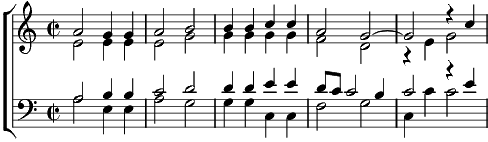

Vous perdez temps de me dire mal d'elle
La mineur
Paroles: Clément Marot
Musique: Claudin de Sermissy

Vous perdez temps de me dire mal d'elle
Gens qui voulez divertir mon entente :
Plus la blâmez, plus je la trouve belle ;
S'ébahit-on si tant je m'en contente.
La fleur de sa jeunesse, A votre avis rien n'est-ce ?
N'est-ce rien de ses grâces,
Cessez, cessez vos grands audaces,
Car mon amour vaincra votre médire :
Tel en médit qui pour soi la désire. Bis